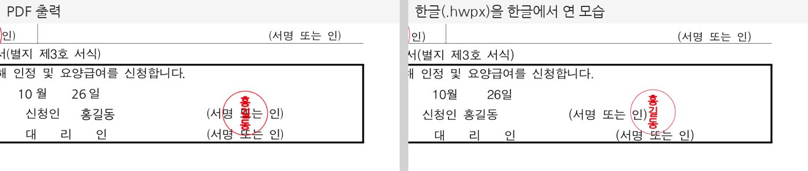
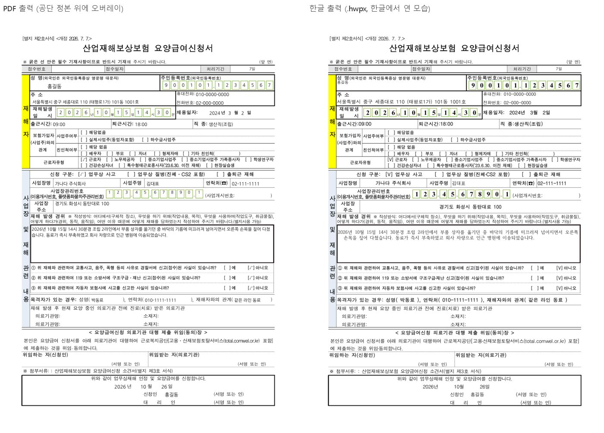

출퇴근 재해 요양급여 신청서를 한글로 채운 결과
0.5.4, 2026년 10월 28일 실사용 1건
- 출력
- 한글(.hwpx) 파일
- 들어간 칸
- 40칸
- 찍힌 체크 칸
- 신청 구분, 사업주 여부, 친인척 여부, 근로자 유형, 개인정보 동의
- 0.5.3 과 비교
- 비어 나오던 체크 칸이 채워짐0.5.4 에서 신청하는 쪽이 쓰는 칸을 12종 651칸에서 836칸으로 보강했습니다.
Claude 같은 AI 도구에 연결하면, 필요한 서식과 첨부를 먼저 정리하고 근로복지공단 정본 서식 12종에 값을 넣어 파일로 저장합니다. 신청인 서명란에는 도장도 찍습니다.
claude mcp add --scope user sanjae-apply -- npx -y sanjae-apply mcp
견본 그림입니다. 이름과 회사는 시험용 값이고, 도장은 이 패키지로 만든 그림입니다.
쓰던 AI 도구에 한 번 연결해 두면, 그다음부터는 말로 부탁하면 됩니다.
Claude Desktop, Claude Code, Cursor 에 설정 한 줄을 넣습니다. 내 PC 에서 돌기 때문에 계정이나 토큰이 필요 없습니다.
급여 종류와 재해 상황을 말하면 필요한 서식, 챙길 첨부, 근거 조문을 정리합니다. 아직 답하지 않은 것은 질문으로 돌려줍니다.
서식에 값을 넣어 PDF 나 한글(.hwpx) 파일로 작업 폴더에 바로 저장합니다. 원하면 신청인 서명란에 도장을 찍습니다.
출퇴근 중 교통사고인데 상대 운전자가 있어요. 요양급여 신청하려면 뭐가 필요해요?
요양급여신청서를 values.json 값으로 한글 파일로 채우고, 홍길동 이름으로 신청인 자리에 도장도 찍어 줘.
한글신청서_도장.hwpx 를 작업 폴더에 저장했습니다.
공단이 배포한 원본 파일을 그대로 쓰기 때문에, 받는 쪽에서 보는 서식은 손으로 쓴 신청서와 같습니다.
공단 서식자료실의 PDF 와 한글 원본 위에 값만 얹습니다. 요양급여신청서는 2026. 7. 7. 개정본이고, 서식마다 개정일은 아래 표에 적었습니다. 원본 파일은 해시로 묶여 있어 공단이 서식을 바꾸면 시험이 먼저 알립니다.
내 PC 에 설치하면 값이 밖으로 나가지 않습니다. 이 페이지의 확인표도 브라우저 안에서만 돕니다. 주민등록번호 칸은 비워 두고 출력한 뒤 손으로 적어도 됩니다.
이름만 주면 성명인을 만들어 신청인 서명란에 찍습니다. 원형·사각·타원 모양과 가진 도장 그림(PNG)도 씁니다. 도장 자리가 있는 11종 서식의 서명란에 PDF·한글 모두 맞춰 두었습니다.

한글 출력은 공단이 배포한 한글 원본 그대로의 .hwpx 입니다. 한글 2014 이상에서 열어 글자를 고치고 인쇄할 수 있습니다. 파일을 만드는 데는 한글이 필요 없습니다.
AI 도구에 연결했을 때 처음 하는 일과 같은 확인입니다. 급여 종류와 재해 상황을 고르면 내야 할 서식, 챙길 첨부, 근거 조문이 바로 나옵니다.
확인표를 고르면 여기에 결과가 나옵니다. 화면이 비어 있으면 자바스크립트가 꺼져 있는지 확인하세요.
npx -y sanjae-apply check YOYANG --accident COMMUTE --third-party yes
고른 값은 어디에도 보내거나 저장하지 않습니다. 「제출할 수 있는 상태」는 서식과 첨부가 갖춰졌다는 표시일 뿐이고, 산재 승인 여부는 근로복지공단이 따로 정합니다.
신청인이 쓰는 칸은 모두 채울 수 있고, 의사·공단이 쓰는 칸은 비워 둡니다. 모두 836칸이며, 서식 이름을 누르면 채우는 칸 목록이 열립니다.
| 서식 | 칸 | 한글 | 도장 자리 | 개정일 | |
|---|---|---|---|---|---|
| 서식 목록을 불러오는 중입니다. | |||||
재활보조기구 처방전은 공단이 PDF 로만 배포해 한글 출력이 없고, 의료기관이 쓰는 서식이라 도장 자리가 없습니다.
설치부터 파일 저장까지의 절차입니다. 전체 문서는 GitHub 의 사용 매뉴얼에 있습니다.
| 항목 | 필요 여부 | 설명 |
|---|---|---|
| Node.js 20 이상 | 필수 | 터미널에서 node -v 가 v20 이상이면 됩니다. 없으면 nodejs.org 에서 LTS 판을 설치합니다. |
| 인터넷 | 처음 한 번 | 패키지(약 4MB)를 받을 때만 씁니다. |
| 한글 2014 이상 | 선택 | 한글(.hwpx) 출력을 열어 고칠 때만 씁니다. |
| AI 도구 | 선택 | Claude Code, Claude Desktop, Cursor 등. 명령줄만 써도 됩니다. |
처음 실행은 패키지를 받느라 18초쯤 걸립니다. AI 도구가 30초 안에 응답이 없으면 연결을 끊기도 하니, 연결 전에 npx -y sanjae-apply --help 를 한 번 실행해 두세요.
쓰는 곳에 맞는 것 하나만 하면 됩니다.
claude mcp add --scope user sanjae-apply -- npx -y sanjae-apply mcp claude mcp list
sanjae-apply … ✔ Connected 가 보이면 끝입니다. --scope user 는 모든 폴더에서 쓰게 합니다. 한 프로젝트에서만 쓰려면 이 옵션을 빼고 그 폴더에서 실행합니다.claude_desktop_config.json 을 메모장 같은 편집기로 엽니다. 윈도우는 %APPDATA%\Claude\, 맥은 ~/Library/Application Support/Claude/ 에 있습니다.mcpServers 만 더합니다.
{
"mcpServers": {
"sanjae-apply": { "command": "npx", "args": ["-y", "sanjae-apply", "mcp"] }
}
}{
"mcpServers": {
"sanjae-apply": { "command": "cmd", "args": ["/c", "npx", "-y", "sanjae-apply", "mcp"] }
}
}Cursor·Windsurf 같은 MCP 도구의 설정에 Claude Desktop 과 같은 command 와 args 를 넣습니다.
"sanjae-apply": { "command": "npx", "args": ["-y", "sanjae-apply", "mcp"] }Cursor 는 연결을 확인했습니다. Windsurf 등 다른 도구는 직접 확인하지 않았고, 같은 명령을 공식 SDK 클라이언트로 띄워 도구 5개가 모두 응답하는 것까지 확인했습니다.
설치 과정이 따로 없습니다. 아래 「명령줄로 채우기」의 명령을 그대로 실행하면 됩니다. 자주 쓰면 전역 설치로 실행 시간을 8초 안팎에서 2.5초로 줄일 수 있습니다.
npm install -g sanjae-apply sanjae-apply --help
운영자에게 토큰을 받은 경우에만 씁니다. 끝점은 Authorization: Bearer 토큰이 없으면 응답하지 않습니다. 같은 도구 5개가 돌고, 입력은 저장하지 않지만 네트워크를 거칩니다. 원격에서는 파일을 바로 저장하는 save_to 를 쓸 수 없어 결과가 base64 로 돌아옵니다.
claude mcp add --transport http --scope user sanjae-apply https://sanjae-apply.vercel.app/api/mcp/mcp \ --header "Authorization: Bearer <발급받은 토큰>"
연결한 뒤 아래 문장을 그대로 넣어 봅니다. 괄호 안은 실제로 써 볼 때 AI 가 부른 도구입니다.
출퇴근 중 교통사고인데 상대 운전자가 있어요. 요양급여 신청하려면 뭐가 필요해요?
(list_required_forms) 필수 서식 4종과 첨부, 근거 조문이 나옵니다.
요양급여신청서를 이 폴더의 values.json 값으로 채워서 이 폴더에 신청서.pdf 로 저장해줘.
(get_form_catalog, fill_form) 작업 폴더에 신청서.pdf 가 생깁니다.
요양급여신청서를 values.json 값으로 한글 파일로 채우고 홍길동 이름으로 도장도 신청인 자리에 찍어서 신청서_도장.hwpx 로 저장해줘.
(fill_form 의 stamp) 한글 파일에 도장 그림이 들어갑니다. 값 파일이 없으면 AI 에게 값을 직접 불러 줘도 됩니다.
AI 도구는 아래 도구를 알아서 고릅니다. 직접 이름을 불러도 됩니다.
| 도구 | 하는 일 |
|---|---|
list_required_forms | 급여 종류와 재해 상황을 받아 서식·첨부·근거 조문·아직 답하지 않은 질문을 정리합니다. |
get_form_catalog | 서식 목록과 서식별 칸 이름, 칸 설명, 도장 자리, 개정일을 돌려줍니다. |
fill_form | 서식에 값을 넣어 PDF 나 한글 파일을 만듭니다. stamp 를 주면 도장을 찍고, 내 PC 설치에서는 save_to(절대 경로)에 바로 저장합니다. |
make_seal | 이름으로 성명인 그림을, 법인명으로 법인형 도장 그림을 만듭니다. |
fill_yoyang_apply | 요양급여신청서 채우기입니다. 예전 판과 맞추려고 남겨 둔 도구입니다. |
save_to 는 이미 있는 파일을 덮어쓰지 않고, 폴더가 없거나 확장자가 형식과 다르면 아무것도 쓰지 않고 오류를 돌려줍니다.
npx -y sanjae-apply check YOYANG --accident COMMUTE --third-party yes
급여 코드는 YOYANG(요양) HUYEOP(휴업) JANGHAE(장해) YUJOK(유족) 등 9가지입니다. 위 「신청 전 확인표」가 같은 명령을 만들어 줍니다.
npx -y sanjae-apply catalog F_YOYANG_APPLY
결과의 slots 가 값 파일에 쓰는 칸 이름이고, slot_labels 에 칸마다 서식 원문 설명이 있습니다.
{
"name": "홍길동",
"claim_kind_accident": true,
"apply_year": "2026",
"apply_month": "10",
"apply_day": "27",
"applicant_name": "홍길동"
}true 일 때만 찍힙니다. 선택지 묶음은 고른 칸 하나에만 true 를 넣습니다.npx -y sanjae-apply fill F_YOYANG_APPLY values.json --out 신청서.pdf npx -y sanjae-apply fill F_YOYANG_APPLY values.json --out 신청서.hwpx --stamp 홍길동
확장자로 형식이 정해지고 PDF 와 한글은 칸 이름이 같습니다. 결과의 unknown_keys 가 비어 있어야 칸 이름이 맞은 것입니다. 도장 모양은 --stamp-shape circle|square|ellipse, 가진 도장 그림은 --stamp-png 로 넣습니다.
| 증상 | 해결 |
|---|---|
Claude Desktop 이 npx 를 못 찾음 | 설정을 cmd /c 로 감쌉니다(Claude Desktop 탭). |
| 연결 시간 초과 | npx -y sanjae-apply --help 로 패키지를 미리 받아 둡니다. |
| 「동봉 글꼴에 없는 글자」 | 한자 이름은 가진 도장 그림을 --stamp-png 로 넣습니다. |
unknown_keys 에 이름이 있음 | 칸 이름 오타입니다. catalog 의 slots 와 맞춥니다. |
| 「이미 있는 파일은 덮어쓰지 않는다」 | 저장할 파일 이름을 바꿉니다. |
| 서식이 바뀌었다는 말을 들음 | npx -y sanjae-apply@latest 로 새 판을 받습니다. |
공개 패키지를 받아 AI 도구와 명령줄로 직접 돌려 본 결과입니다. 값은 모두 시험용 합성 값이고, 실제 사건 값으로는 검증하지 않았습니다.
0.5.4, 2026년 10월 28일 실사용 1건

| 확인한 것 | 방법 | 결과 | 판 |
|---|---|---|---|
| 자동 시험 | 규칙·PDF·한글·도장·연결 시험 전체 | 224건 통과 | 0.5.4 |
| 칸 전수 보강 | 서식 원본에서 칸과 체크 상자를 세어 덮이지 않은 자리 0 확인 | 651 → 836칸 | 0.5.4 |
| PDF 채우기 | 12종 글자 위치와 픽셀 비교 | 실패 0 | 0.5.4 |
| 한글 채우기 | 11종을 한글에서 실제로 열어 그리고 쪽수 대조 | 실패 0 | 0.5.4 |
| 명령줄 | npm 에서 받은 패키지로 확인·목록·채우기·도장·오류 전 명령 | 110/110 | 0.5.3 |
| 내 PC 연결(stdio) | 도구 5개 호출과 파일 바로 저장·덮어쓰기 거부 | 11/11 | 0.5.3 |
| 한글 도장(타원) | 11종 서명란에 찍고 위치 대조 | 11/11 | 0.5.3 |
| Claude Code | 「처음 써 보기」 문장 3개, 저장까지 | 3/3 | 0.5.3 |
| Claude Desktop | 대화창에서 도구 호출과 필수 서식 응답 | 확인 | 0.5.3 |
| 원격 연결 | 운영 끝점 드라이런 | 31/31 | 0.5.2 |
0.5.2·0.5.3 결과는 2026년 10월 27일, 윈도우 11·Node 24 에서 돌린 기록입니다. 다시 돌리는 방법은 사용 매뉴얼 「다시 검증하는 법」에 있습니다.
MIT 라이선스로 공개한 npm 패키지라 내 PC 에 설치해 쓰는 데 비용이 없고, 계정이나 토큰도 필요 없습니다. 원격 연결만 운영자가 발급한 토큰이 있어야 합니다.
내 PC 에 설치하면 값은 그 PC 안에서만 처리하고 어디에도 저장하거나 보내지 않습니다. 원격 연결은 서버에 저장하지 않지만 네트워크를 거칩니다. 이 페이지의 확인표는 브라우저 안에서만 돕니다. 주민등록번호 칸은 비워 두고 출력한 뒤 손으로 적어도 됩니다.
아닙니다. 서식과 첨부가 갖춰졌다는 표시일 뿐입니다. 산재 승인 여부는 근로복지공단이 심사해 정하고, 이 도구는 그 결과를 다루지 않습니다.
한글 파일을 만드는 데는 한글이 필요 없습니다. 만든 .hwpx 를 열어 고치거나 인쇄할 때 한글 2014 이상이 있으면 됩니다. PDF 출력은 어떤 PDF 뷰어로도 열립니다.
서식 원본 파일은 해시로 묶여 있어 서식이 바뀌면 시험이 먼저 깨집니다. 고친 판을 다시 내니 npx -y sanjae-apply@latest 로 받으면 됩니다. 서식마다 개정일은 서식 표에 있습니다.
동봉 글꼴에 없는 글자는 빈 도장이 되지 않도록 오류를 내고 멈춥니다. 한자 이름은 가진 도장 그림(투명 배경 PNG)을 넣어 찍습니다.
하지 않습니다. 채운 파일을 만드는 데까지이고, 접수는 공단 고용·산재보험 토탈서비스나 방문·우편으로 직접 합니다.
Claude Code, Claude Desktop, Cursor 에서 연결을 확인했습니다. MCP 를 지원하는 다른 도구도 같은 설정으로 붙일 수 있지만 직접 확인하지는 않았습니다. AI 도구 없이 명령줄만으로도 씁니다.
설치는 설정 한 줄이고, 입력값은 내 PC 를 떠나지 않습니다.